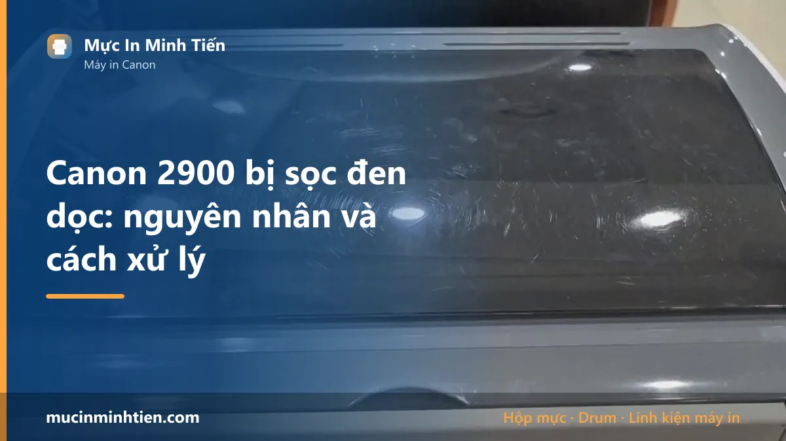
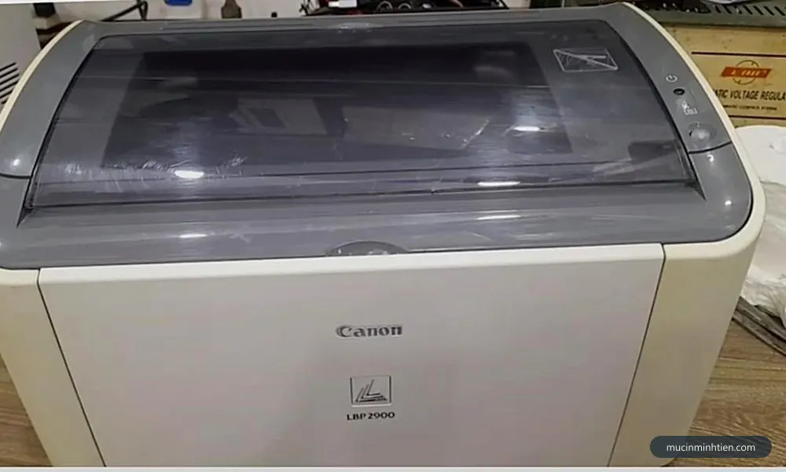
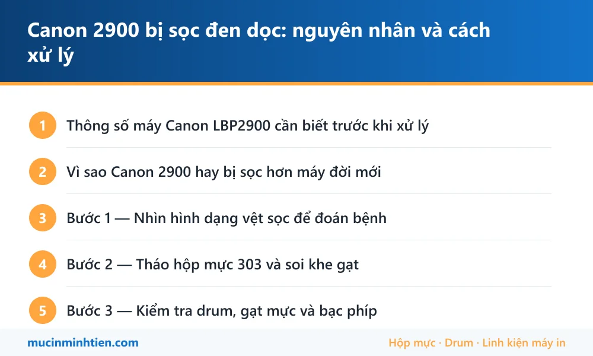

Canon 2900 bị sọc đen dọc: nguyên nhân và cách xử lý

Canon LBP2900 bị sọc đen dọc gần như luôn xuất phát từ hộp mực 303 chứ không phải từ máy: drum đã nạp lại quá nhiều lần nên mòn lớp phủ, lưỡi gạt mực mẻ để mực thừa lọt qua, bạc phíp mòn làm drum quay lệch, hoặc mực vón cục kẹt ở khe gạt. Đây là máy ra đời từ 2007 và vẫn chạy khắp văn phòng Việt Nam, nên phần lớn ca sọc là bệnh tuổi tác của hộp mực chứ không phải máy hỏng.
Thông số máy Canon LBP2900 cần biết trước khi xử lý
Biết đúng máy mình đang dùng loại nào giúp khỏi mua nhầm vật tư và khỏi làm theo hướng dẫn của dòng khác.
| Hạng mục | Chi tiết |
|---|---|
| Hộp mực | Canon 303 (EP-303) — thị trường Việt Nam quen gọi theo mã tương đương HP 12A |
| Số trang mỗi hộp | Khoảng 2.000 trang ở độ phủ 5% |
| Kiểu máy | Đơn năng — chỉ in, không scan, không copy |
| Kết nối | Chỉ USB, không có mạng và không có Wi-Fi |
| Điểm yếu khi dùng lâu | Drum và gạt mực của hộp 303 xuống cấp nhanh sau 2–3 lần nạp |
| Ưu điểm khi sửa | Vật tư 12A phổ biến và rẻ nhất trong các dòng laser |
Vì sao Canon 2900 hay bị sọc hơn máy đời mới
LBP2900 ra mắt từ năm 2007 và tới nay vẫn là máy in laser phổ biến nhất trong văn phòng nhỏ ở Việt Nam. Chính độ phổ biến đó tạo ra đặc điểm riêng của mọi ca sọc trên dòng này.
- Hộp mực bị nạp đi nạp lại rất nhiều lần. Vỏ hộp 303 bền, nên thay vì mua mới người dùng nạp tiếp. Drum và lưỡi gạt bên trong thì không bền tương ứng — sau khoảng hai tới ba lần nạp, lớp phủ drum đã mòn và mép gạt đã chai.
- Vật tư 12A rẻ nên hay bị nạp bằng mực trôi nổi. Mực sai kích thước hạt làm mòn gạt và trục từ nhanh gấp nhiều lần mực đúng loại.
- Máy đã chạy trên chục năm. Bạc phíp hai đầu drum mòn, drum quay lệch nhẹ và tì không đều lên giấy.
Hệ quả thực tế: trên dòng này, đổi sang một hộp mực khác còn tốt là bước chẩn đoán nhanh nhất và cũng đúng nhất, vì hơn chín phần mười nguyên nhân nằm trong hộp mực.
Bước 1 — Nhìn hình dạng vệt sọc để đoán bệnh
Trước khi tháo bất cứ thứ gì, in ba trang liên tiếp và so sánh. Ba kiểu vệt dưới đây ứng với ba bộ phận khác nhau bên trong hộp mực 303.
- Vệt đen mảnh, sắc nét, đứng đúng một vị trí trên mọi trang — drum đã xước hoặc có vật lạ tì vào drum.
- Vệt rộng, mờ, mép nhòe, đôi khi kèm lem — lưỡi gạt mực mòn hoặc mẻ một điểm, mực thừa lọt qua.
- Vệt xám không đều, lúc có lúc không giữa các trang — mực vón cục kẹt ở khe gạt, hay gặp với hộp đã nạp nhiều lần hoặc máy để lâu không dùng.
Nếu vệt nằm ngang chứ không dọc thì bệnh khác hẳn, đọc bài máy in bị sọc ngang để đo chu kỳ lặp.

Bước 2 — Tháo hộp mực 303 và soi khe gạt
Hộp mực 303 tháo ra rất dễ, chỉ cần mở nắp trước và rút thẳng ra theo ray. Việc này an toàn và giải quyết được kha khá ca sọc mà không tốn đồng nào.
- Tắt máy, mở nắp trước, rút hộp mực ra và đặt lên tờ giấy sạch.
- Che mặt drum khỏi ánh sáng mạnh — không để hộp mực phơi nắng hoặc dưới đèn gắt quá vài phút.
- Soi đèn dọc khe hẹp nơi lưỡi gạt tiếp giáp drum, tìm mảnh giấy, xơ vải, ghim hoặc hạt mực đóng cứng.
- Gắp vật lạ bằng nhíp, nhẹ tay, không cạy và không dùng vật cứng chạm vào mặt drum.
- Lắc ngang hộp mực năm sáu lần theo chiều trục để rải đều mực, lắp lại và in thử ba trang.
Rất nhiều ca sọc trên 2900 dừng lại ở đây. Nếu vệt vẫn còn nguyên, đi tiếp bước 3.
Bước 3 — Kiểm tra drum, gạt mực và bạc phíp
Ba bộ phận này nằm trong hộp mực và là thủ phạm của phần lớn ca sọc kéo dài trên LBP2900.
Drum. Nghiêng hộp mực dưới ánh sáng chéo, nhìn dọc theo ống drum màu xanh lục bóng. Vết xước hiện lên thành đường mảnh sẫm hơn. Drum xước thì không sửa được, phải thay — và nếu hộp đã nạp từ ba lần trở lên thì thường thay drum kèm gạt luôn cho đáng một lần tháo.
Gạt mực. Mép lưỡi gạt còn tốt thì thẳng và bám một lớp mực mỏng đều. Gạt hỏng có điểm khuyết, mép chai bóng hoặc dính mảng mực cứng. Gạt mòn là nguyên nhân số một của vệt rộng và mờ.
Bạc phíp. Đây là hai vòng nhựa nhỏ ở hai đầu drum, giữ khoảng cách giữa drum và trục từ. Mòn không đều thì hai bộ phận này tì sai lực và bản in ra vệt dọc kèm đậm nhạt lệch hẳn về một bên trang. Bạc phíp 12A rất rẻ, thay theo cặp.
Danh sách vật tư và giá cho dòng này có ở trang hộp mực 12A.
Bước 4 — Khi nào nên thay hộp mực thay vì sửa tiếp
Có một ngưỡng mà sửa tiếp không còn kinh tế. Với LBP2900, ngưỡng đó khá rõ:
- Hộp mực đã nạp từ bốn lần trở lên — vỏ đã rơ, gioăng đã cứng, sửa xong sẽ sinh bệnh khác trong vài tháng.
- Đã thay drum một lần mà nay lại xước tiếp trong thời gian ngắn — thường là do trong máy còn dị vật hoặc do mực nạp sai loại.
- Vỏ hộp có vết nứt, mực rỉ ra khoang máy — đây là nguồn gốc của cả sọc lẫn lem mực.
- Sửa cộng dồn ba bốn linh kiện lại xấp xỉ giá một hộp mực dựng mới hoàn chỉnh.
Ngược lại, hộp mực mới nạp lần đầu hoặc lần hai mà bị sọc thì gần như luôn đáng sửa, chi phí chỉ bằng một phần nhỏ so với thay hộp.
Bảng giá vật tư 12A thật trong kho
Khác với giá dịch vụ chung chung, đây là vật tư thật đang có sẵn cho dòng 2900. Số lượng ghi rõ trong ngoặc vì nhiều mã bán theo bộ.
| Vật tư cho LBP2900 | Quy cách | Giá kho |
|---|---|---|
| Trục từ 12A | Bộ 2 cây | 34.000 đ |
| Bạc phíp 12A | 1 cặp | 25.000 đ |
| Gạt mực nhỏ 12A | Bộ 5 cây | 40.000 đ |
| Drum 12A / FX9 (Mitsu, Nhật) | Bộ 5 cây | 185.000 đ |
| Bao lụa dùng chung 2900 / 1200 / 12A | 1 cái | 80.000 đ |
| Ron từ 12A | Bộ 10 cặp | 10.000 đ |
Giá trên là giá vật tư rời, chưa gồm công thay. Mua lẻ từng cây thì đơn giá cao hơn giá chia trung bình của bộ.
Bảng tra: dấu hiệu nào ứng với nguyên nhân nào
| Dấu hiệu | Nguyên nhân | Cách xử lý | Chi phí |
|---|---|---|---|
| Vệt đen mảnh, sắc nét, đứng yên một vị trí | Drum xước hoặc có vật lạ tì vào | Soi khe gạt, gắp vật lạ; còn vệt thì thay drum | từ 39.000 đ |
| Vệt rộng, mờ, mép nhòe | Lưỡi gạt mực mòn hoặc mẻ | Thay gạt mực, làm cùng lúc khi nạp | từ 30.000 đ |
| Vệt xám thất thường, lúc có lúc không | Mực vón cục ở khe gạt | Đổ mực cũ, vệ sinh hộp, nạp lại đúng loại | từ 80.000 đ |
| Vệt dọc kèm đậm nhạt lệch một bên trang | Bạc phíp mòn không đều | Thay bạc phíp theo cặp | 25.000 đ/cặp |
| Lắc hộp mực thì đỡ, in tiếp lại sọc | Mực sắp cạn | Nạp mực | từ 80.000 đ |
| Đổi hộp mực khác vẫn sọc đúng chỗ | Dị vật trong khoang máy hoặc cụm quang bẩn | Soi đèn khoang máy, vệ sinh cụm quang | từ 150.000 đ |
Vật tư cho Canon LBP2900 có sẵn tại kho 77 Bắc Hải, Phường Diên Hồng, TP.HCM — xem bảng giá 773 mã hoặc gọi 0915 510 203 kèm model máy.
Khi nào nên gọi kỹ thuật viên
- Đã đổi sang hộp mực khác còn tốt mà vệt sọc vẫn nguyên vị trí — lỗi nằm ở máy chứ không ở hộp mực
- Mực rỉ ra khoang máy, đáy máy có bụi mực đóng dày
- Muốn thay drum và gạt nhưng chưa từng tháo rời hộp mực 303 — lắp lệch lưỡi gạt là hỏng luôn cả hộp
- Máy kêu rít hoặc có mùi khét kèm theo lỗi sọc
- Máy dùng cho công việc gấp, cần xử lý dứt điểm trong một lần
Báo giá xử lý Canon LBP2900 tận nơi
| Hạng mục | Giá tham khảo |
|---|---|
| Kiểm tra, vệ sinh hộp mực và khoang máy | từ 100.000 đ |
| Nạp mực hộp 303 / 12A | 80.000 – 150.000 đ |
| Thay gạt mực | từ 30.000 đ + công |
| Thay trục từ | từ 34.000 đ/bộ 2 cây + công |
| Thay drum | từ 39.000 đ + công |
| Thay bạc phíp | 25.000 đ/cặp + công |
| Vệ sinh cụm quang | từ 150.000 đ |
Kỹ thuật viên kiểm tra và báo giá trước khi làm — xem cam kết ở dịch vụ sửa máy in tận nơi TP.HCM.
Cách phòng tránh tái phát
- Đừng nạp quá ba lần trên cùng một hộp mực. Vỏ 303 bền hơn ruột rất nhiều, và tiết kiệm ở lần nạp thứ tư thường phải trả bằng một ca sọc kéo dài.
- Mỗi lần nạp mực yêu cầu vệ sinh gạt và kiểm tra drum. Chi phí thêm không đáng kể mà chặn được cả sọc đen lẫn lem mực.
- Nạp đúng chủng loại mực bột cho 12A. Mực sai kích thước hạt mài mòn lưỡi gạt và trục từ nhanh hơn nhiều lần.
- Không in giấy đã ghim kẹp. Một mẩu ghim sót lại đủ để xước drum vĩnh viễn chỉ trong một trang.
- Đừng cố in tiếp khi đã thấy sọc. Mỗi trang lỗi vẫn tiêu tốn một vòng quay của drum và trục từ mà không thu được bản in dùng được.
